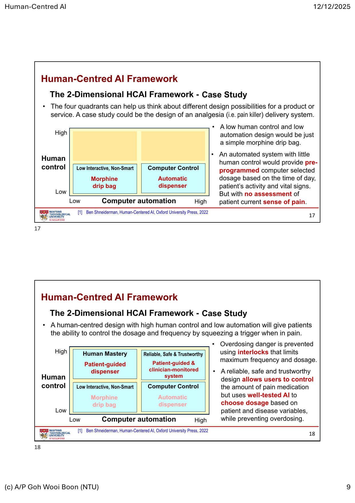
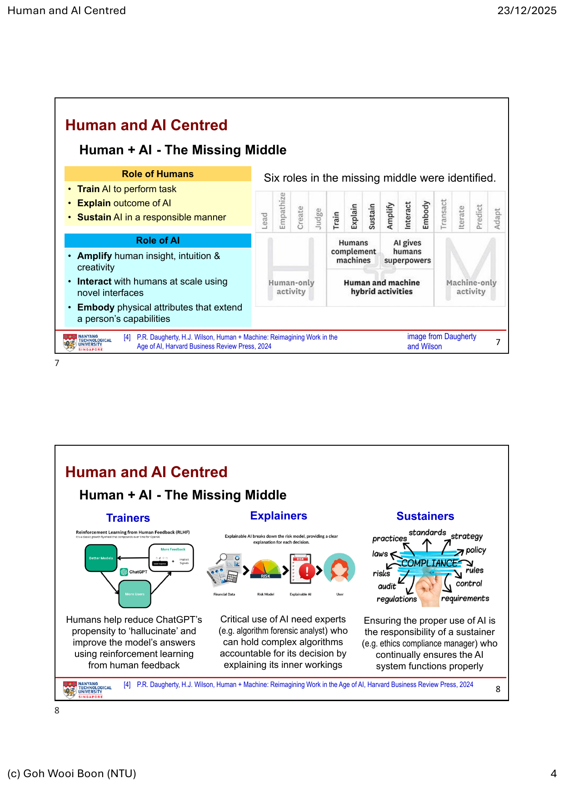
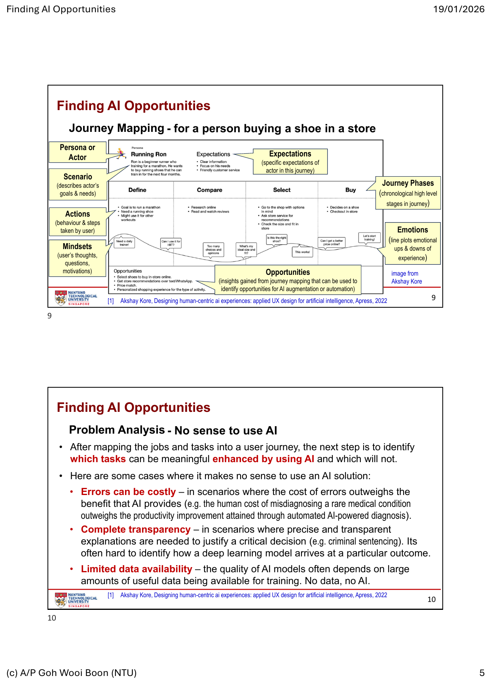
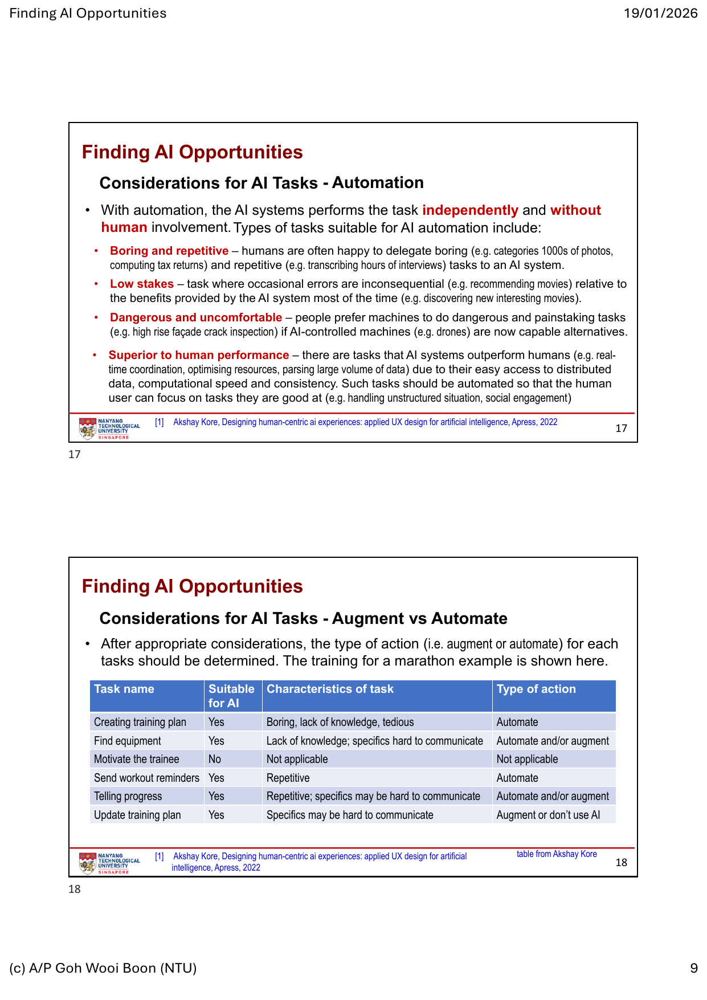
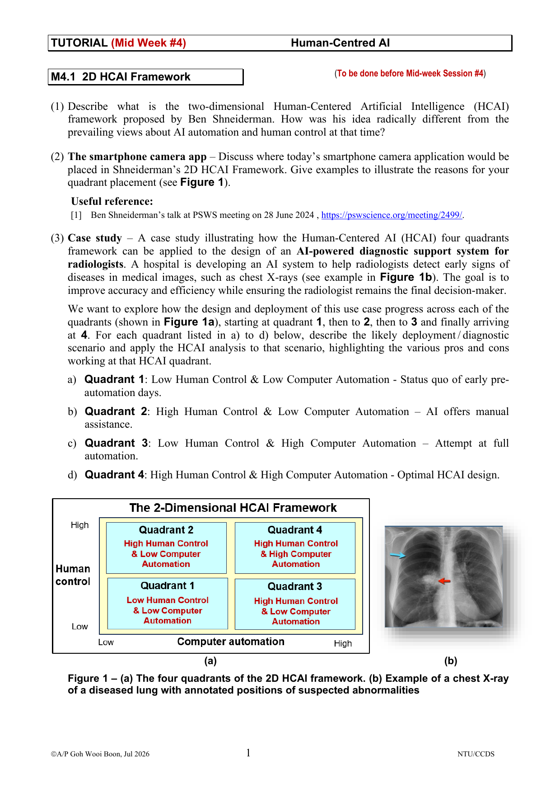
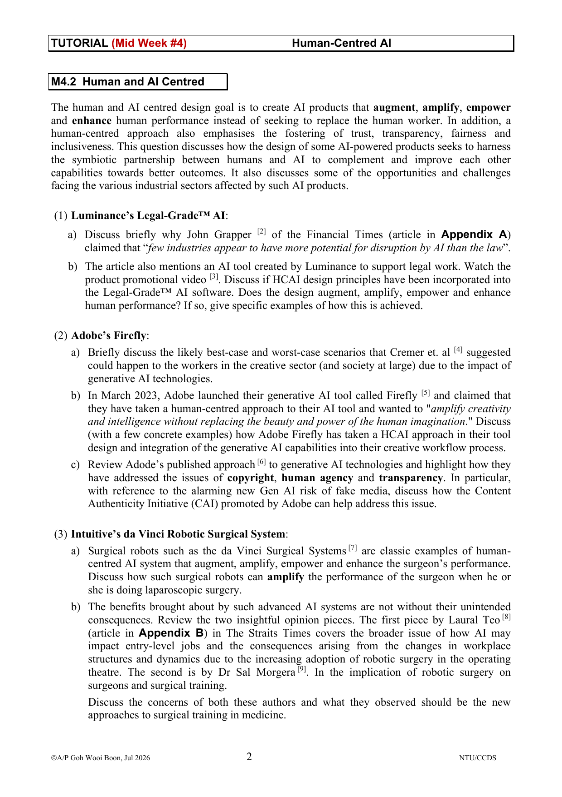
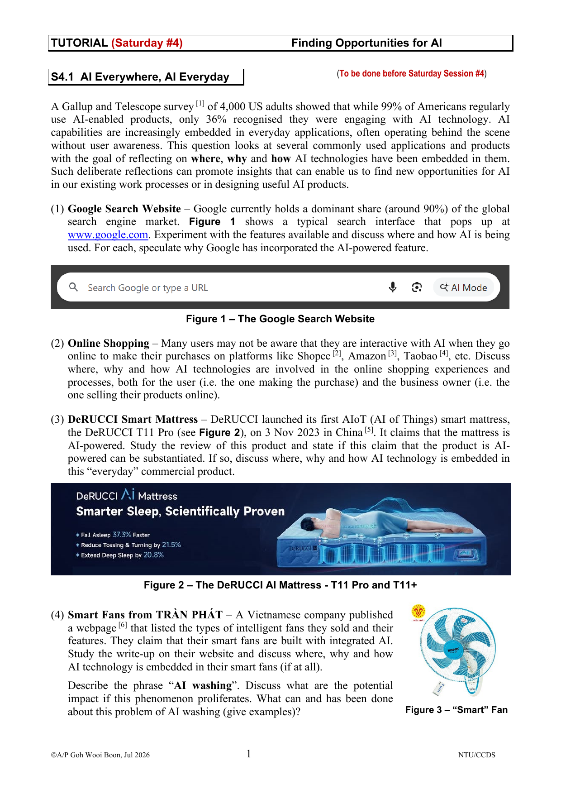
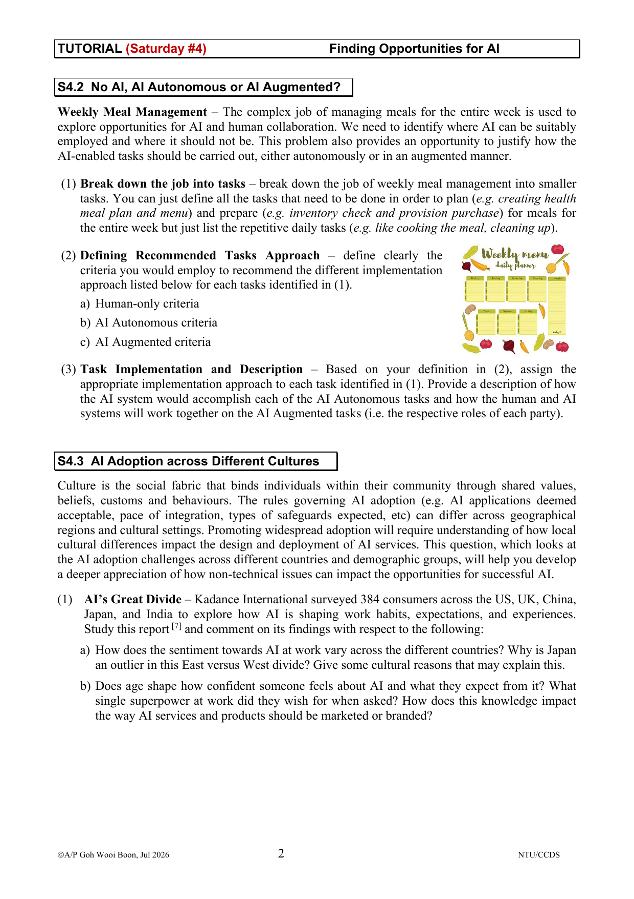

Human-Centred AI 与 AI 机会识别
第四周从“AI 能做什么”转向“AI 应怎样与人协作”。核心是把 human control 与 computer automation 分开思考，比较人和 AI 的互补能力，再用 job → task → user journey → augment / automate 的方法寻找真正有价值的 AI 机会。
必须掌握的术语
| 术语 | 考试级理解 |
|---|---|
| Human-Centred AI (HCAI) | 把人的 needs、values、capabilities 放在 AI 设计与运行核心；目标是增强人的 self-efficacy、creativity、responsibility 与 connectedness，并减少恶意行为、偏置数据和缺陷软件的伤害。 |
| automation / augmentation | automation 让系统独立完成任务；augmentation 延伸人的能力并保留有意义的判断与控制。高自动化不必然意味着低人类控制。 |
| rationalism / empiricism | rationalism 强调逻辑、规则、形式方法和数据驱动算法；empiricism 强调在真实环境观察复杂性、差异、不确定性与意外行为，并通过用户反馈持续修正。 |
| meaningful human control | 人能理解当前状态、预期结果、及时获得反馈、干预或覆盖系统，并对行动结果承担清楚责任；“界面上有按钮”不等于有意义控制。 |
| reliable / safe / trustworthy | reliable 是需要时产生预期响应；safety culture 是利益相关者以审查、规范和运营实践持续降低伤害；trustworthy 是系统经独立、可信机构评估或认证后值得依赖。 |
| 2D HCAI framework | 横轴是 computer automation 从低到高，纵轴是 human control 从低到高。两轴独立，所以设计目标可以是“高自动化 + 高人类控制”。 |
| VUCA | Volatile、Uncertain、Complex、Ambiguous；人类更擅长在此类非结构化、情境不断变化的环境中解释并适应。 |
| Missing Middle | 纯人工和纯机器之间常被忽略的协作空间。人类训练、解释、维持 AI；AI 放大、交互并以实体能力延伸人类。 |
| job / task | job 是为达成目标要完成的整体工作；task 是构成该工作的可管理活动单元。判断 AI 机会必须在 task 层级，而不是笼统说“自动化整个职业”。 |
| user journey map | 围绕特定 persona 与 scenario，按时间展示 phases、actions、mindsets、emotions 和 opportunities；它用研究证据定位 pain points 与 AI 可以增强或自动化的任务。 |
| algorithm aversion | 人们知道算法并不完美后，即使算法平均表现更好，也可能拒绝使用；给予少量可理解的修改权和控制感可能提高接受度。 |
| AI washing | 产品或企业夸大、模糊甚至虚构 AI 能力，把普通规则、自动化或联网功能包装成“AI”，却不能说明数据、模型、自适应行为或可验证价值。 |
核心知识
4.1 Human-Centred AI｜同时追求自动化与人类控制
本章框架 / 案例：Traditional AI vs HCAI、rationalism vs empiricism、reliable-safe-trustworthy 三项属性、2D HCAI 四象限、Boeing 737 MAX MCAS、infusion pump 与 analgesia delivery system。
1. Traditional AI 与 HCAI 的差别
传统 AI 常以效率和生产力为理由，重点是把任务交给机器。HCAI 不是否定自动化，而是改变成功标准：AI 应增强人的能力和责任，而非简单替代人。当用户理解系统为自己带来的价值、边界和控制方式时，更容易形成信任、接受并持续采用。
| 比较 | Traditional automation emphasis | HCAI emphasis |
|---|---|---|
| 主要问题 | 机器能否更快、更少人地完成任务？ | 人和 AI 怎样共同得到更好、可负责的结果？ |
| 人的位置 | 可能被视为需要减少的成本或误差来源。 | 保留能力、价值判断、监督、责任和申诉路径。 |
| 成功标准 | 效率、速度、吞吐量、自动化率。 | 效率之外，还看人类能力、可靠性、安全、信任和社会影响。 |
2. Rationalism 必须由 Empiricism 补足
rationalist 相信规则、逻辑和算法可以被完善，因而倾向于设计无需人类监督的自治系统；empiricist 会进入真实世界，观察情境、差异、不确定性、异常与用户行为。课件以 Roomba 说明：纯理性主义追求机器人自己高效完成任务、尽量减少界面；经验主义设计则让用户知道它在做什么、将做什么，并能控制和调整过程。
Google Flu Trends 是警示：历史搜索模式和形式模型在现实行为改变后可能失准。正确结论不是放弃算法，而是把逻辑严谨与观察、反馈、现场验证结合。HCAI 设计需要用户在自然情境中的观察和 participatory design，使责任、可预期反馈与控制成为系统的一部分。
3. 三项 desirable attributes 不可混答
- Reliable：在需要时给出预期响应；来源是扎实的软件工程，包括 audit trails、rigorous testing 与 explainable outcomes。
- Safety culture：不只是一次安全测试，而是 stakeholder 的共同规范，持续落实在运营、内部审查与行业标准遵循。
- Trustworthy：不能只靠公司自称可信；独立、成熟机构的评估和认证给用户外部保证。
4. 2D HCAI Framework 四象限
| Human control | Computer automation | 象限与典型任务 | 设计含义 |
|---|---|---|---|
| Low | Low | Interactive, Non-Smart：music box、simple clock、mousetrap。 | 设备智能和交互都少；不是所有产品都需要 AI。 |
| High | Low | Human Mastery：学吉他、骑车、烘焙、休闲运动。 | 探索、练习和错误本身构成价值；过度自动化会夺走能力建立与乐趣。 |
| Low | High | Computer Control：airbag、ABS、pacemaker。 | 适合反应速度超出人类、过程与传感器稳定可预测的任务；生命关键系统仍需严格设计、测试和 fail-safe。 |
| High | High | Reliable, Safe & Trustworthy：camera、elevator、tele-operated surgical robot、driver assistance。 | 适合复杂、情境变化、需要创造性或专业判断的任务；AI 提供强自动化，人仍有预期、干预、覆盖和责任。 |
最重要考点：一维思维把 automation 与 control 当跷跷板；2D 框架认为二者可以同时提高。高人类控制不等于人手操作每个底层动作，而是能设定目标、理解建议、决定采用、及时覆盖并承担最终责任。
5. 两种极端风险与 safeguards
Excessive automation：设计者误以为自治系统不会失败，于是缺少 manual override、contingency plan 或训练。课件以 737 MAX MCAS 说明：自动控制故障时，飞行员若不了解系统或不会切换，就没有真正控制。
Excessive human control：把复杂操作全部交给人也可能因界面混乱和默认设置不明而造成错误。生命关键设备应有安全上电默认值、interlocks / guards、防止非法输入的 range checking，以及只允许可接受输出的软件约束。HCAI 追求的是合适控制，不是控制越多越好。
6. Analgesia delivery 四象限案例

- Low-Low：普通 morphine drip bag，智能和互动很少。
- Low human / High automation：系统依据时间、活动和生命体征自动选剂量，但不了解病人当前痛感。
- High human / Low automation：病人疼痛时按 trigger 控制剂量和频率；interlock 限制最高剂量与频率，避免 overdose。
- High-High：病人仍控制用药，clinician 可监测；经过验证的 AI 根据病人和疾病变量建议剂量，并用约束防止过量。
四象限案例题作答模板
- 先分别说明 human control 与 computer automation 的高低，不能只写“用了很多 AI”。
- 说明任务的速度、结构化程度、风险、情境变化和专业判断需求。
- 指出人能否设定目标、看到依据、接受/拒绝、修正、override 和申诉。
- 写出收益与 failure mode，再提出 feedback、audit trail、training、safe defaults、interlock、range check、fallback 等 safeguard。
4.2 Human and AI Centred｜在 Missing Middle 设计互补协作
本章方法 / 案例：Human + AI symbiosis、AI 的四项强项、人类的五项强项、Missing Middle 六种角色；Netflix recommendation、human-in-the-loop training、algorithm explanation、ethics compliance、smart glasses、agent assist 与 co-bot。
1. Symbiosis：双方都因合作而变好
“人与 AI 争夺工作”会遮蔽合作机会。symbiotic partnership 指 AI 给人更好的能力与服务，人类的使用、反馈和判断又帮助 AI 改善表现。Netflix recommendation 是课件例子：系统降低寻找内容的成本，并从用户偏好与观看行为中持续学习。
2. AI 与人的能力边界
| AI 擅长 | 为什么 | 人类擅长 | 为什么 |
|---|---|---|---|
| Monotonous maestro | 重复、常规任务可快速、一致、不疲倦地执行。 | VUCA scenarios | 能结合情境解释并快速适应变化、复杂和歧义。 |
| Distributive spread | 容易复制并通过网络即时共享新知识。 | Physical dexterity | 能在动态现实环境协调身体，完成细致、不规则操作。 |
| Ubiquitous presence | 可跨地点和多种硬件提供服务。 | Valued judgement | 涉及伦理、责任、payoff 与 utility 时需要价值判断。 |
| Big data | 能快速处理大量数据、识别隐藏模式和异常。 | Small data | 能从少量例子与先验知识快速概括。 |
| Social engagement | 更能解释情绪、社会关系与非语言线索。 |
答题边界：不要把表格写成人永远强、AI 永远弱的绝对结论。它是任务分配的启发式工具；具体能力仍受模型、数据、界面、训练和环境影响。
3. Missing Middle 的六种角色

| 角色 | 主体 | 准确理解与例子 |
|---|---|---|
| Train | Human complements AI | 示范、标注、纠正和反馈，让 AI 学会任务；例如以 human feedback 降低 chatbot hallucination，或以视觉示教训练机器人抓取。 |
| Explain | Human complements AI | 把复杂模型的依据、限制和后果翻译给用户与监管者；algorithm forensic analyst 使系统可被问责。 |
| Sustain | Human complements AI | 持续确保 AI 正确、合规和负责任运行；ethics compliance manager 监控偏差、政策与失效。 |
| Amplify | AI gives superpowers | 扩大人的 insight、intuition、creativity；例如 smart glasses 把维护信息叠加到现场视野。 |
| Interact | AI gives superpowers | 通过 NLP 等界面与大量人交互；agent assist 理解问题、检索 FAQ 并即时帮助客服。 |
| Embody | AI gives superpowers | 以物理系统延伸人的力量、精度或可达范围；co-bot 负责重物与难到达位置，人负责装配判断。 |
4.3 Finding AI Opportunities｜从 Job 拆到 Task，再决定是否用 AI
本章方法 / 案例：AI tool-assistant-peer-manager 角色连续体；job decomposition；user journey mapping；no-AI / good-AI 条件；data-cost-time-effort 可行性；augment vs automate；marathon training 与文化差异。
1. 控制水平决定 AI 的角色
| AI role | 控制与行为 | 课件例子 |
|---|---|---|
| Tool | 人类控制最多；用户决定是否调用、接受或忽略输出。 | Google Lens 翻译上传图片或实时相机中的文字。 |
| Assistant | 回应用户请求，并根据上下文更主动地建议或采取有限行动。 | Grammarly 修正文法并给出符合上下文的改写。 |
| Peer | AI 独立完成自己的功能，与人形成 cognitive division of labour。 | 汽车工厂里人和机器人共同完成 axle drive assembly。 |
| Manager | AI 组织人类活动、分配与协调任务，人的直接控制最低。 | 系统分析实时交通视频并调整红绿灯；自动仓储系统管理包装与物流。 |
角色越靠 manager，越要解释为什么必须给系统更高控制，并提供监督、override、问责和故障恢复。高自主不自动等于“更先进”或“更适合”。
2. Job → Tasks → Journey Map → Opportunity
job 是达成目标的整体工作，task 是可执行单元。课件把“在私人教练帮助下跑完全马”拆成创建训练计划、选择装备、提供动力、提醒训练、反馈进度、更新计划。只有拆到 task，才能分别判断哪些适合人、哪些适合 AI。
journey map 面向一个具体 persona 与 scenario，按时间排列 journey phases 与 actions，同时记录 expectations、mindsets、emotions 和 opportunities。有效地图来自 user interview、market research、contextual inquiry 或 direct observation，不是团队凭想象画出的漂亮流程图。

3. 什么时候不应使用 AI
- Errors can be costly：错误成本大于效率收益，例如罕见疾病误诊。
- Complete transparency required：刑事判决等关键决定要求精确、可解释依据，而黑箱模型难以满足。
- Limited data：没有足量、有代表性、可访问且正确标注的数据；“No data, no AI”。
- Rapid time-to-market / low-cost product：可靠 AI 的数据、训练、计算、测试和维护成本与期限不匹配。
- High social interaction：任务高度依赖共情、细微语气、表情和非语言线索。
- People resistant to AI：用户认为系统 opaque、rigid、emotionless、independent 或 adversarial；若无法建立透明度和控制感，强推只会降低采用。
4. 什么时候 AI 很有价值
- Personalisation：有可用的用户资料或行为数据，可针对不同用户调整体验。
- Recommendation & ranking：选项太多，人无法自行筛完；AI 以清楚逻辑排序并保留用户选择权。
- Recognition & categorisation：从大量样本识别实体、聚类或自动分类，例如照片标记、缺陷产品分拣、客户群发现。
- Anomaly detection：从正常行为中识别异常变化，例如信用卡异常消费。
- Natural language understanding：翻译、语音转写与免手操作。
- Generate new data：根据训练示例生成文本、图像、音乐或视频；必须同时评估准确性、版权、透明度和人的创作控制。
5. “适合 AI”之后还要做可行性判断
Data：是否存在？能否合法访问？数量是否足够？是否具代表性、质量良好且标签准确？Cost, time and effort：数据收集、人员、训练算力、测试、部署和长期维护是否超过价值？团队是否有时间和能力完成？价值主张是否真的优于非 AI 方案？
6. Augment 还是 Automate

| 优先 Augment | 理由 | 优先 Automate | 理由 |
|---|---|---|---|
| Personally valuable | 人享受诗歌、设计等过程；AI 应提供灵感，不应夺走活动价值。 | Boring & repetitive | 大量分类、转写、重复计算可稳定交给机器。 |
| Personal responsibility / empathy | 绩效评估、判决等需要人的价值判断和责任。 | Low stakes | 偶发错误后果轻，整体收益大，例如电影推荐。 |
| High stakes | 手术等关键任务可用 AI 增强精度与信息，但人必须监督和决定。 | Dangerous / uncomfortable | 无人机外墙检查等能让人远离危险或痛苦环境。 |
| Ill-defined | 口味、家居风格等标准不完整；AI 提供选项，人保留解释与选择。 | Superior to human performance | 实时协调、资源优化、海量解析等任务在速度、一致性和分布式数据上机器占优。 |
marathon 例子中：训练计划可 automate；装备选择可 automate 或 augment；动力与情感支持不适合 AI 完全承担；提醒可 automate；进度反馈可两者结合；训练计划更新因情境难完整表达，应 augment 或不用 AI。
7. 文化影响采用、信任与控制感
课件引用的统计显示，部分西方国家企业积极部署 AI 的比例约 26–36%，部分亚洲国家约 50–59%。individualist 文化更可能把 AI 理解为限制 uniqueness、autonomy 与 privacy；collectivist 文化可能更重视协调和环境适应。对 individualist 用户，把 AI 设计和叙事定位为放大独特性与个人选择，可能比强调统一效率有效。
voice assistant 点餐与 touch panel 的例子说明：相同功能下，接口给予的控制感会改变满意度。algorithm aversion 研究进一步说明，即使只有小幅修改输入或决定的权利，也可能提高人们使用不完美算法的意愿。文化还会影响披露意见、提供评价、接受个性化推荐与隐私焦虑。
解释边界：文化差异是需要研究和本地化的设计变量，不是给所有国家或年龄贴固定标签。样本、测量方式、行业、政策和 AI 经验都会改变结果。
Tutorial M4 · Human-Centred AI｜案例题原题与解析
题组：2D HCAI framework、smartphone camera、radiology diagnostic support；Luminance Legal-Grade AI、Adobe Firefly、da Vinci robotic surgery 与技能培养的意外后果。
M4.1 · 2D HCAI Framework

Q1 参考结构：先定义两条独立轴，再指出当时主流一维观点把“更多 automation”视为“更少 human control”；Shneiderman 的关键突破是二者可同时高，可靠、安全、可信的系统常位于右上象限。
Q2 Smartphone camera：现代相机最合理地放在 high control + high automation。AI 自动完成 autofocus、exposure、HDR、多帧合成、降噪、scene detection 等底层处理；用户仍选择拍摄目标、构图、时间、镜头/模式，可预览、重拍、编辑，专业模式还允许覆盖参数。若某应用自动抓拍、自动筛选且无法解释或关闭，human control 会下降，因此应明确按“具体设计”定位。
Q3 Radiology 四象限推进：
| 象限 | 部署情境 | 优点、风险与 HCAI 分析 |
|---|---|---|
| Low-Low | 放射科医生手工读片，无 AI 或高级数字辅助。 | 责任清楚但速度慢、易疲劳、结果受个人经验影响；也是 status quo 基线。 |
| High human / Low automation | 医生主动使用放大、测量、对比度、手工标注等工具；系统不自动下诊断。 | 控制与专业判断高，但重复搜索负担仍大，漏诊和一致性问题未充分改善。 |
| Low human / High automation | AI 自动读片并直接产生或执行诊断，人只被动接收甚至被绕过。 | 吞吐快、一致，但 rare case、bias、distribution shift、错误自动扩散与责任不清风险高；不符合“医生 final decision-maker”的目标。 |
| High-High | AI 标出疑似区域、优先级、置信度与比较影像；医生复核、结合病史、修改或否决，并签署最终报告。 | AI 处理海量模式，人处理情境、异常、伦理与沟通；需要解释、audit log、override、持续监测、异常升级和明确责任。 |
M4.2 · Legal AI、Creative AI 与 Robotic Surgery

Luminance：法律行业由大量文本、规则、precedents、合同条款与高成本重复审阅构成，所以 AI 可用于检索、初审、提取、比较与草拟。HCAI 论证应写具体交互：AI 在 Word 中 first-pass review、突出可接受/不可接受条款、给 precedent 与 fallback wording、回答合同问题、解释修改 rationale；律师保留审阅、谈判、接受/拒绝和最终责任。它分别体现 amplify（扩大检索与分析）、interact（自然语言问答）、train/sustain（组织知识与合规维护），但不能因“legal-grade”标签跳过 hallucination、confidentiality、bias 和责任审查。
Creative work 三种未来：最佳情境是 AI-assisted innovation explosion：降低门槛、快速生成多种方案，人负责选择、编辑与用途判断；最坏情境是 machines monopolise creativity：低成本内容淹没原创、创作者退出、训练数据与版权不公平，长期可能减少新创意；第三种是 human-produced content 获得真实性溢价。考试若只问 best / worst，应至少写前两种，并把治理、激励和 human agency 连接起来。
Adobe Firefly 的 HCAI 证据：它把生成能力嵌入既有创作 workflow，让创作者以 prompt、选择、局部生成填充、扩展和后续编辑保留控制；AI 负责快速变体，人负责意图、审美、品牌和发布判断。版权层面要讨论训练数据授权与创作者补偿；human agency 要看人能否反复修改、拒绝和继续手工编辑；透明度由 Content Credentials 记录发行者、日期、使用应用、AI 工具与编辑动作等 tamper-evident provenance，帮助读者判断媒体来源。Content Credentials 提供上下文，不等于内容必然真实，也不能阻止 metadata 被移除后的所有滥用。
da Vinci 如何 amplify：高分辨率 3D 视野、动作缩放、震颤过滤、EndoWrist 多自由度器械与舒适控制台，把外科医生的视觉、精细控制、可达性和稳定性放大；机器人不独立决定手术，医生持续控制，因此是 high automation + high human control 的典型。
训练的 unintended consequences：机器人由主刀在远端 console 控制，初级医生更容易变成观察者，减少手工、开放和腹腔镜技巧、触觉、解剖记忆与处理异常的机会；若入门任务消失，组织未来的资深人才管线也会断层。改进方案包括结构化 apprenticeship、明确 console 轮转、双重 open + robotic competency、最低开放手术经验、高拟真且带 haptic / XR simulation、录像复盘、分级授权、长期技能与病人结果监测。答案必须同时承认机器人带来的精准和微创收益，不能写成单向反技术立场。
Tutorial S4 · Finding AI Opportunities｜原题与答题框架
题组：Google Search、online shopping、AIoT mattress、smart fan / AI washing；weekly meal management 的 no AI / autonomous / augmented；East-West、年龄、信任与 AI 产品定位。
S4.1 · AI Everywhere, AI Everyday

统一答题结构：不要只列“用了推荐算法”。每个案例分别回答：where（哪个具体步骤/界面）、how（输入数据、模型行为与输出）、why（用户或业务价值）、control & risk（人能否修改/拒绝，以及隐私、偏差、错误）。
- Google Search：query autocomplete、spell correction、intent understanding、ranking、image/voice recognition、摘要或问答、广告匹配。输入是查询、内容、链接和可允许的上下文；价值是减少输入、提高相关性和检索速度；风险是 filter bias、错误摘要、隐私与来源可见性。
- Online shopping：买家侧有语义搜索、推荐/排序、客服、虚拟试用与欺诈检测；卖家侧有需求预测、库存、广告、动态定价、内容生成、物流路线和异常检测。价值分别是发现、转化、效率与风控；需要价格透明、推荐解释和选择退出。
- AIoT mattress：若传感器收集睡姿、压力、睡眠或生命体征，并由模型识别状态、个性化调整分区硬度且随使用改善，AI claim 才较可证；若只是预设规则或远程控制，应称 smart automation。还要问数据准确、隐私、安全默认值和故障时能否手动控制。
- Smart fan / AI washing：温度传感器触发开关、定时和 app remote control 本身可以只是 if-then automation。要证明 AI，应给出可验证的感知、预测、自适应或学习机制。AI washing 会误导消费与投资、削弱信任、模糊责任并挤压真正创新；应以明确能力说明、证据测试、广告规范、审计与监管执法约束。
S4.2 + S4.3 · Meal Management 与跨文化采用

先定义三类标准：Human-only 用于个人意义、共情/价值判断、感官与灵巧度高、数据不足或错误成本过高；AI Autonomous 用于低风险、重复、结构化、数据充分、规则与成功指标清楚、机器明显更快；AI Augmented 用于高风险或 ill-defined 但 AI 能提供预测、选项、提醒或信息的任务，人保留决定和责任。
| Meal task | 建议方式 | 人和 AI 的角色 |
|---|---|---|
| 收集健康目标、过敏、文化/宗教和口味 | AI Augmented | 人确认价值、限制与敏感信息；AI 结构化偏好、发现冲突、提出追问。 |
| 检查库存与有效期 | Autonomous / Augmented | 视觉或条码系统识别并提醒；人确认识别错误和实际可用状态。 |
| 生成一周菜单与营养计算 | AI Augmented | AI 在预算、营养和库存约束下生成候选；人按口味、生活安排和医疗建议选择。 |
| 生成购物清单、比较价格、下单 | Autonomous with limits | AI 合并数量、比价并在批准预算/品牌替代规则内下单；人确认高价或敏感替代。 |
| 烹饪与调味 | Human-only / Augmented | 人负责感官、灵巧和安全判断；AI 可计时、分步提示和监控温度，不应默认完全取代。 |
| 清洁和重复提醒 | Autonomous where safe | 机器人或提醒系统处理重复部分；危险器具与异常仍升级给人。 |
| 根据剩菜、临时活动和反馈重排计划 | AI Augmented | AI 快速重算候选；人解释模糊情境并批准变化。 |
跨文化调查：课件 Tutorial 引用的五国 384 人研究显示 India / China 整体更乐观和有准备，US / UK 更受隐私、工作替代和不透明担忧影响；Japan 虽有机器人产业基础，却更偏好 AI 作为 sidekick，重视可证明的 utility、可靠性与 human oversight。年龄也影响采用：较年轻群体通常更愿探索，较年长群体更希望清楚、可控、受支持。产品不应使用同一 onboarding 与营销：高信任用户可强调探索和能力放大；谨慎用户应强调安全、隐私、证据、训练和可撤销控制。
“AI superpower”考点：受访者更想要 faster learning、improved creativity 和 better balance，而不仅是自动替代。设计与品牌信息应把 AI 描述为 amplifier / partner，展示人如何变得更有能力，而不是只宣传削减人数和速度。
第四周考试速记
| 若题目出现 | 答案骨架 |
|---|---|
| “解释 HCAI” | 人类 needs / values / capabilities → augment not replace → meaningful control and responsibility → reliable, safe, trustworthy。 |
| “放入四象限” | 分别判断两条轴 → 用系统行为举证 → 写收益与 failure mode → 给 safeguards；不要只凭 AI 多不多定位。 |
| “Human + AI” | 列人/AI 各自强项 → Missing Middle 分配角色 → 说明反馈闭环与责任。 |
| “寻找 AI 机会” | job → tasks → researched journey → pain point → no-AI / good-AI 条件 → data/cost/time → augment/automate → control & monitoring。 |
| “案例评价” | where / how / why → human control → evidence → risk → transparency / override / audit / fallback。 |
| “文化采用” | 报告观察到的差异 → 可能机制（信任、隐私、控制、训练）→ 本地化设计 → 避免把样本趋势写成民族本质。 |
常见错误
- 把 HCAI 简化为“界面友好”或“给人一个确认按钮”，却不检查人是否理解、能干预并承担清楚责任。
- 沿用一维思维，认为 automation 增加必然导致 human control 减少。
- 把 high human control 理解成每一步都必须手动操作；控制的核心是目标、信息、选择、覆盖和责任。
- 把 reliable、safe、trustworthy 当同义词，遗漏工程、组织文化和独立评估三个层次。
- 笼统说“AI 取代某个职业”，没有把 job 拆成能力要求不同的 tasks。
- 因为任务“可以用 AI”就直接开发，忽略代表性数据、访问权、标签质量、成本、时间、维护和非 AI 基线。
- 把高风险、个人责任或模糊任务完全自动化，却没有 human review、override、audit trail 和 fallback。
- 只按产品宣传判断“AI-powered”，没有证据区分学习/推理、自适应规则、普通自动化与联网控制。
- 把跨文化调查趋势写成固定刻板印象，忽略样本、代际、行业、制度、经验与测量限制。
练习
任选 smartphone camera、radiology AI 或 autonomous vehicle，先写两条轴证据，再写象限、收益、failure mode 和三项 safeguards。最后说明怎样把方案推向 high-high。
为 Legal AI 或 Firefly 分别写出 human 的 train / explain / sustain，以及 AI 的 amplify / interact / embody；不适用的角色要说明原因。
把“安排一周膳食”拆成至少八个 task，逐个选择 no AI、autonomous 或 augmented，并用风险、结构化程度、数据、价值和控制说明理由。
找一个宣传为 AI 的家电，逐项记录感知输入、模型/规则、自适应、输出、证据与人工控制。如果证据不足，写出厂商必须提供什么才能支持 claim。
为同一 AI workplace assistant 设计两套 onboarding：一套面向高探索意愿用户，一套面向重视隐私与控制的谨慎用户。功能保持相同，只改变解释、训练、默认值与控制机制。